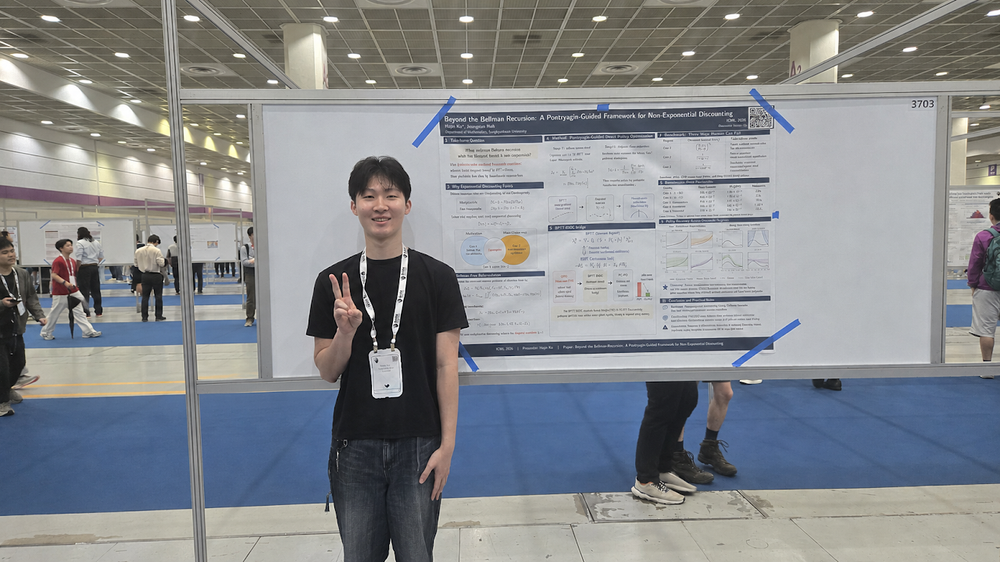

Hojin Ko from our lab presented his poster at ICML 2026, held at COEX in Seoul. His presentation was titled “Beyond the Bellman Recursion: A Pontryagin-Guided Framework for Non-Exponential Discounting.” 👏
Conference
Hojin Ko presents at ICML in Seoul.

Hojin Ko from our lab presented his poster at ICML 2026, held at COEX in Seoul. His presentation was titled “Beyond the Bellman Recursion: A Pontryagin-Guided Framework for Non-Exponential Discounting.” 👏